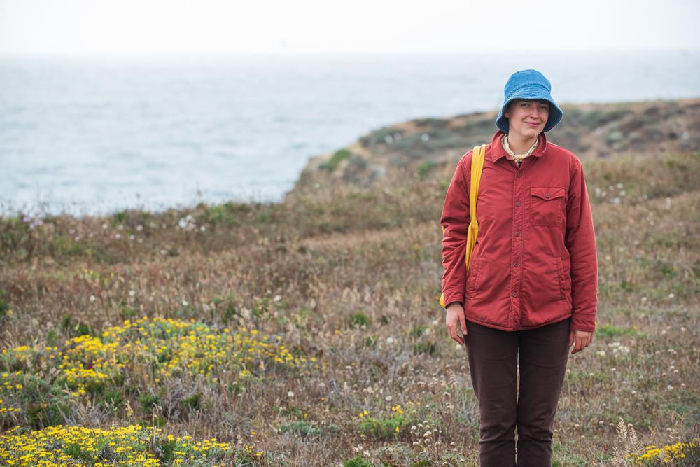

Photography
I offer full-service photography for events, film shoots, portrait sessions, bike rides, community gatherings, and more!
As a car-free photographer and journalist in San Francisco, my speciality is covering the safe streets movement. My work has been published in The Examiner, The Frisc, Richmond Review, Sunset Beacon, and other Bay area publications.
I'm also the set photographer for local YouTube series Comedians on Bicycles Getting Bob's.
Contact
Hire an award-winning photojournalist for your next event!
I'll use my background in narrative and writen reporting to tell your next story through captivating images.
Reach out at . I charge a flexible hourly rate, depending on the type and scope of the project.
